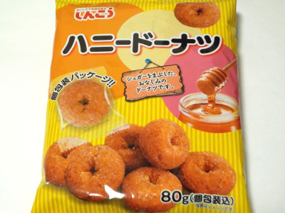
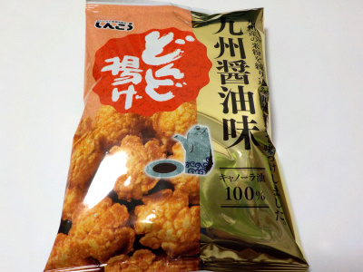

しんこうのハニードーナッツ。
2023/11/03

小さいドーナッツが個包装になっているので、手が汚れないしクズも落ちなくて食べ易かったです。
ドーナッツはふかふかしてて、口の中で溶けるような感じでなくなりました。次々つまみたくなりました。
福岡県北九州市小倉南区上曽根新町13-3
2023/11/03

小さいドーナッツが個包装になっているので、手が汚れないしクズも落ちなくて食べ易かったです。
ドーナッツはふかふかしてて、口の中で溶けるような感じでなくなりました。次々つまみたくなりました。
2022/12/22

醤油がしみてて味わい深い揚げせんべいです。
醤油があるせいかサクサクじゃなくて、ほどよい歯ごたえがあるのもいいです。
昔食べてた揚げせんべいはこんな感じだったなー。今食べても美味しいって思いました。